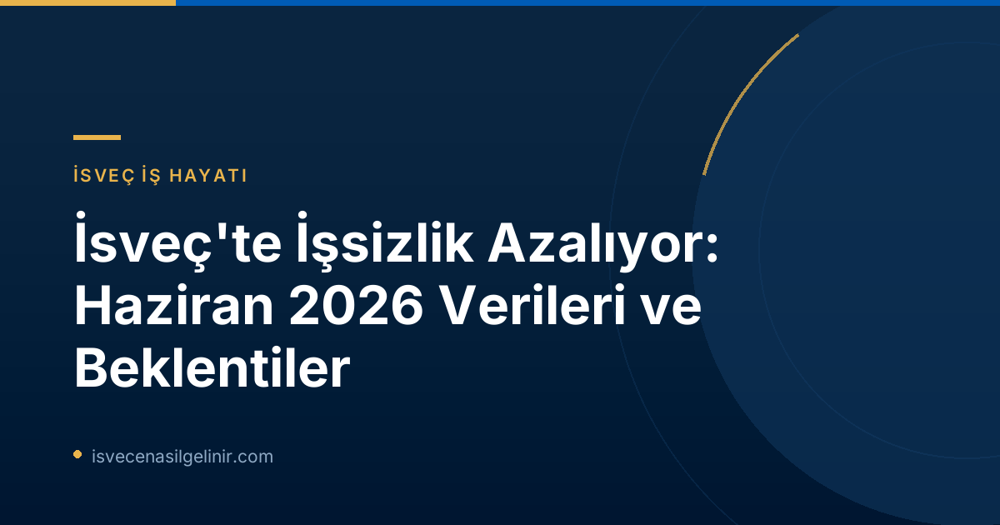

İsveç Genelinde İşsizlik Oranları Düşüşte
Arbetsförmedlingen'in Haziran 2026 verileri, İsveç'te işsizlik oranlarındaki düşüşün devam ettiğini ortaya koyuyor. Ülke genelinde işsiz sayısında 2025 Haziran ayına kıyasla önemli bir azalma kaydedildi. İşgücü piyasasındaki bu pozitif gelişim, hem erkek hem de kadınlar için, hem İsveç doğumlu hem de yurt dışında doğmuş kişiler için geçerli.
| Veri Kategorisi | Haziran 2026 | Haziran 2025 | Değişim |
|---|---|---|---|
| Kayıtlı İşsiz Sayısı | 344.357 | 366.496 | -22.139 |
| İşsizlik Oranı (kayıtlı işgücünün yüzdesi) | %6,4 | %6,9 | -%0,5 |
| Açık İşsiz Sayısı | 193.650 | 201.528 | -7.878 |
| Aktivite Destek Programlarındaki Kişiler | 150.707 | 164.968 | -14.261 |
Bu veriler, işgücü piyasasındaki genel toparlanmanın bir göstergesi niteliğinde. Özellikle kayıtlı işsiz sayısındaki 22.000 kişilik düşüş, ekonomideki canlılığa işaret ediyor.
Genç İşsizliği (18-24 Yaş) ve Uzun Süreli İşsizlikte İyileşme
İsveç'te genç işsizliği de azalan kategoriler arasında yer alıyor. Haziran 2026 itibarıyla 18-24 yaş arasındaki kayıtlı işsiz genç sayısı yaklaşık 39.000 olarak belirlendi. Bu rakam, geçen yılın aynı ayına kıyasla yaklaşık 3.000 kişilik bir düşüşe tekabül ediyor ve genç işsizlik oranının %7,8'den %7,3'e gerilemesini sağlıyor.
Uzun süreli işsizlik de ülke genelinde düşüş gösteren bir diğer önemli alan. En az bir yıldır işsiz olan kişilerin sayısı Haziran 2026'da 148.000 civarındaydı. 2025 yılındaki 152.000 rakamına kıyasla bu kategoride de yaklaşık 4.000 kişilik bir azalma yaşandı. Uzun süreli işsizlerin yaklaşık yarısı Avrupa dışı ülkelerde doğmuş kişilerden oluşmasına rağmen, bu grup son zamanlarda İsveç doğumlu uzun süreli işsizlere göre daha olumlu bir gelişim sergilemiş durumda. Haziran 2026'da Avrupa dışı ülkelerde doğup en az on iki aydır işsiz olan kişi sayısı yaklaşık 68.000 olup, bu rakam geçen yıla göre 6.000 kişilik bir düşüşü ifade ediyor. İşgücü piyasasının bu dinamik yapısını takip etmek ve güncel bilgilere ulaşmak için sverigemedborgarskapsprov.com adresini ziyaret edebilirsiniz.
Bölgelere Göre İşsizlik Dağılımı ve Dikkat Çeken Noktalar
İşsizlik oranları ülke genelinde düşse de, bölgeler arasında hala önemli farklılıklar bulunuyor. Bazı bölgelerde işsizlik oranları ulusal ortalamanın üzerinde seyrederken, bazı bölgelerde oldukça düşük seviyelerde kaydedildi.
Bölgelere Göre İşsizlik Durumu (Haziran 2026)
- En Yüksek İşsizlik Oranları:
- Skåne: %8,4
- Södermanlands: %8,0
- Västmanlands: %7,8
- En Düşük İşsizlik Oranı:
- Norrbottens: %3,4
Bu bölgesel farklılıklar, yerel işgücü piyasalarının kendine özgü dinamiklerini ve ekonomik yapılarını yansıtmaktadır.
İş Piyasadaki Dinamizm: Kayıtlar ve İş Yerleştirmeler
İşgücü piyasasının genel sağlığını gösteren diğer önemli göstergelerden biri de İş ve İşçi Bulma Kurumu'na yapılan yeni kayıtlar ve işe yerleştirilen kişi sayısıdır. Haziran 2026'da yaklaşık 43.000 kişi Arbetsförmedlingen'e iş arayan olarak kaydolurken, bu sayı 2025 Haziran ayına göre 1.000 kişi daha azdı. Öte yandan, aynı dönemde 36.000 kişi iş bularak kurumdaki kaydını sildirdi. Bu, geçen yılın aynı ayına göre 3.000 kişilik bir artış anlamına geliyor ve işe yerleştirme oranlarının yükselişte olduğunu gösteriyor.
İşgücü Piyasası Dinamikleri (Haziran 2026)
| Gösterge | Haziran 2026 | Haziran 2025 |
|---|---|---|
| Yeni İş Arayan Olarak Kaydolanlar | 42.980 | 44.099 |
| İş Bulan Kişiler | 35.673 | 32.405 |
| İşten Çıkartılma Bildirimi Alanlar | 2.857 | 4.606 |
İstatistiklerin Arka Planı ve Gelecek Gelişmeler
Arbetsförmedlingen'in yayınladığı bu istatistikler, kurumun kendi kayıtlarına dayanmaktadır ve İsveç'in resmi işsizlik istatistikleri (Statistiska centralbyrån - SCB tarafından yayınlanan İşgücü Anketi - AKU) ile farklılık gösterebilir. 2024 yılında işgücü büyüklüğünü hesaplama metodolojisinde yapılan değişiklikler ve 2026 istatistiklerinin 16-66 yaş aralığını, 2025 istatistiklerinin ise 16-65 yaş aralığını kapsaması bu farklılıklara neden olmaktadır. Bu durum, veri karşılaştırmalarında dikkatli olunması gerektiğini göstermektedir.
İşgücü piyasasındaki gelişmelerin takibi açısından, Arbetsförmedlingen bir sonraki faaliyet istatistiklerini 13 Ağustos 2026 tarihinde, saat 06:00'da yayınlayacağını duyurdu. Bu duyuru, Temmuz 2026 dönemi verilerini içerecektir.
Referanslar:
İsveç'te İşte Fırsatları Keşfedin!
İsveç'teki istihdam piyasasındaki gelişmeler hakkında daha fazla bilgi edinmek ve kariyer fırsatlarını kaçırmamak için güncel haberlerimizi takip edin. İsveç'e göçmenlik veya çalışma izni süreçleri hakkında detaylı danışmanlık hizmetlerimizden faydalanmak ister misiniz?